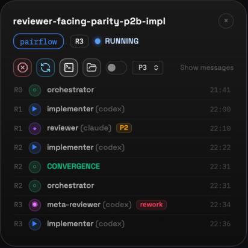

codex cli
Iteration
Without Drift
Keeping a Growing Design
Corpus Coherent
Corpus Coherent
Nobody designs a complex system in one pass.
Neither a human, nor an LLM.
Both come at a price...
Try it: review with 1 agent and 10 perspectives, then with a subagent per perspective.
The second is far more comprehensive.
In both shapes: learnings transfer top-down AND bottom-up.
Patterns emerge during the work, potentially inducing corpus-wide changes.
Coherency load: every link that must hold.
And the links grow faster than the corpus.

“I just need to design the config.”
(famous last words)Building a website versus building a web framework.
Those perspectives needed to be incorporated.
Researching other projects is cheap with LLMs.
Concepts blend, decisions hide, big chunks overwhelm both minds.
Iteration, dependencies, a shifting landscape: unstructured data is hard to keep coherent.
Specific concepts, stakeholder views, structural questions: prose is one linearization.
An economical asymmetry: generation became nearly free, verification did not.
Prose can describe the design.
It cannot carry the load of changing it.
Named, typed entities give humans and LLMs a map of the corpus.
Helps get around the working-set limits.
Concepts become addressable.
Does every referenced entity exist?
Token-dense storage; safer transformation; the structure itself can be iterated.
LLMs are non-deterministic.
Super capable at finding issues in context, but usually not all of them.
So multiple rounds are needed to reach coherence.
LLMs have a limited attention budget.
The tighter the context, the better the result.
The round count depends on the size and structure of the document.
Physically breaking down the monolith creates new information. That can be leveraged in multiple ways.
A unit is one function. A layer stores only its delta; the build reassembles the page.
A layer stores only what it adds or rewrites; the rest is inherited.
Change a lower unit: inheritors rebuild automatically, only overriders need review.
Focused LLM edits: smaller context, fewer errors, cheaper coherence.
The pieces are not just the same text: a knowledge graph with metadata and purpose-dependent traversals.
An LLM works far better on a bounded slice than on one giant context.
E.g. change an invariant and you see exactly what depends on it.
The structure ITSELF can be iterated: enables innovation.
ages out, do not over-invest
better models will leverage it MORE
Rule of thumb: build the structure that encodes decisions and intent; skip what merely works around mechanics.
Work we can hand over
Passes through untouched
Some decisions have to be made by a human in a given context.
The human must see what they are saying yes to.
Information created by the process cannot be inferred up front, not even by a perfect model.
Structure is the human control interface.
The register is not paperwork: it is the list of conversations still to be had.
The model cannot silently change underneath: CI enforces both.
Human attention goes only where it is genuinely needed.
They fail independently: good lens, bad loop·good loop, bad lens.
Review tests intent transfer. Ambiguity for the reviewer signals ambiguity for implementers.
Every finding is classified (with a reason):
fix ·
investigate · decline.
LLMs are better at finding something than at being done.
Definition of done at the right abstraction
level +
cost limit.
The loop must carry the value judgment.
Define what to check and what evidence would support a finding.
Different models, context, or methods can expose different blind spots.
Test on known defects and known-good examples.
A clean report is only as informative as the checks behind it.
Attach evidence to every claim,
not just an assertion.
Example: retry policy
ClaimThe spec contradicts itself on retries.
Evidence
§2Retry failed requests.
§5Never retry failed requests.
Evidence makes the reviewer’s claim easier to recheck.
A lens is an artifact: design it, validate it, version it.
Structure creates informationThe corpus is a system of
relationships;
the breakdown itself creates new, leverageable
information.
It serves both “minds”Humans and LLMs get the same
thing:
understanding and navigation of the design space.
The design can breathe, and can be verifiedStructure makes change safe and the result checkable.
Route human attention where it really mattersThe structure can
also be leveraged to steer human attention:
it surfaces the
decisions that need a person.
Design for the LLM’s characteristicsEspecially the feedback loops: without a disposition and a stop rule, what you get is a never-ending nitpicking loop.